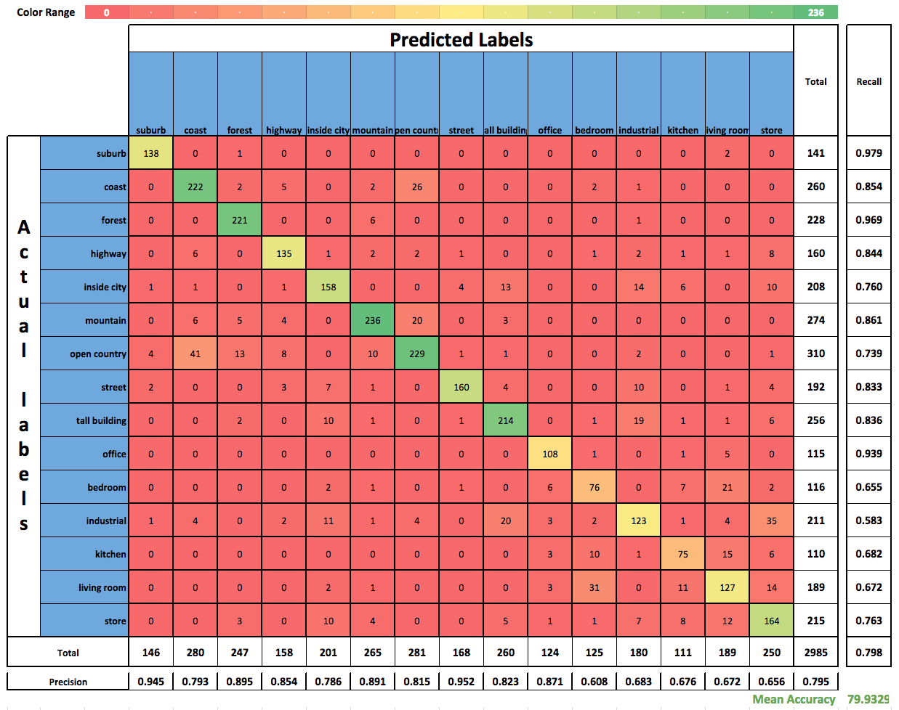

|
Table of contents
|
Extensions
Incremental Codebook Optimization
We implemented Algorithm 4.1 from J. Wang et al and following are our observations:
We were able to run the code for 10 images per training class and we obtained a mean accuracy of 79.93 with parameter values lambda = 1 and sigma = 1.
Shown below is the corresponding confusion matrix:

Thorough evaluation of parameters using grid search
We implemented a function grid_search.m which takes as inputs the possible parameter values for: dictionary type, dictionary size, pyramid levels, number of training images as a list and generates all possible permutations.
Following our the results of our grid search:
|